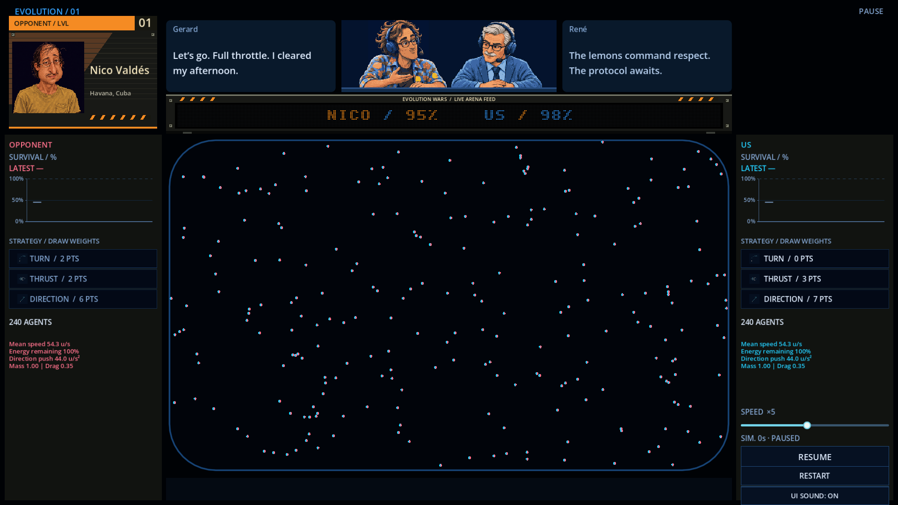
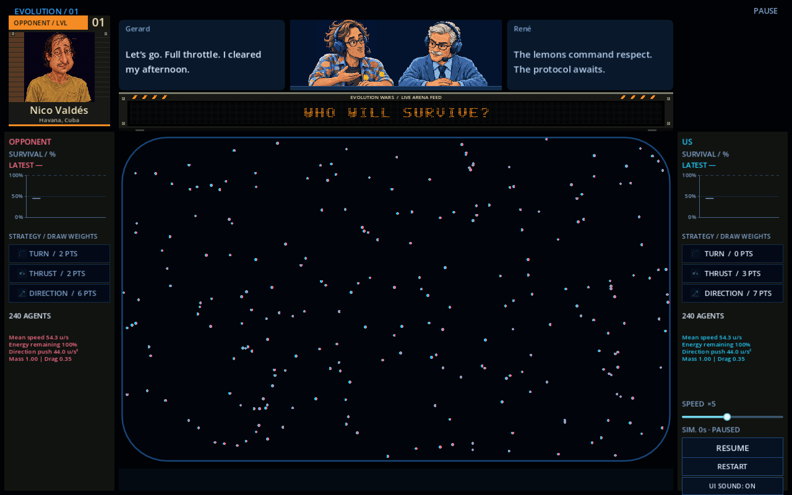
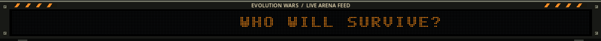
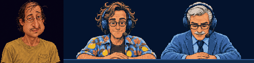

A first industrial broadcast pass: painted orange entrant plate, charcoal steel, fasteners, hazard markings and a physical enclosure for the fixed LED matrix. Nico stays at the same native pixel scale as the commentators.
The technical selection and clock row is gone. Current match updates remain in the marquee. Composition charts are removed from both sidebars and preparation; survival, strategy and motion statistics remain. Arena geometry and simulation are unchanged.


The casing and bulbs stay fixed while messages scroll, stop, flash and resume.


Captures from the running Godot project. Earlier versions remain preserved in v44 and v45.